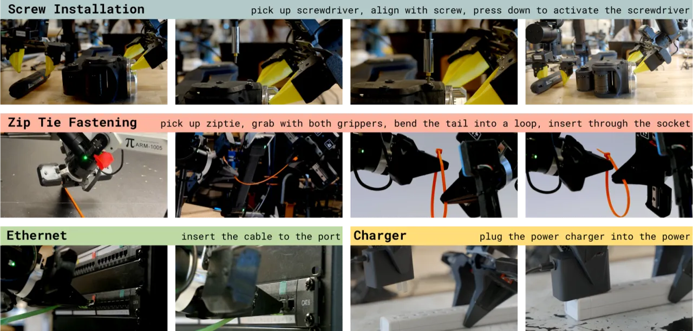
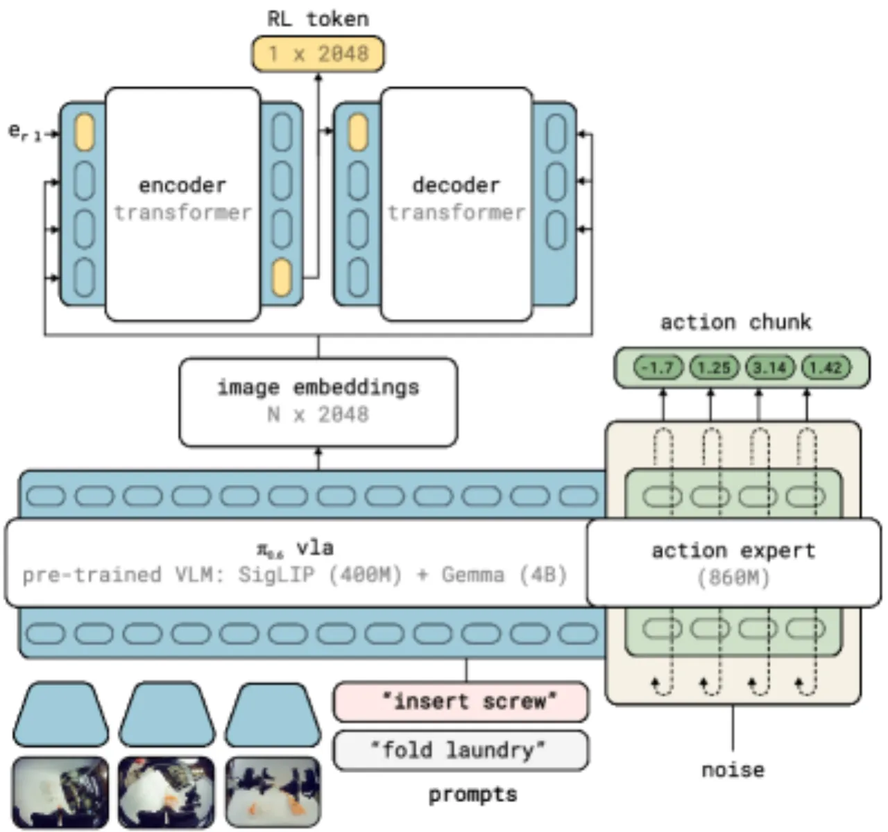
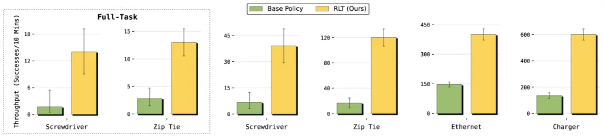
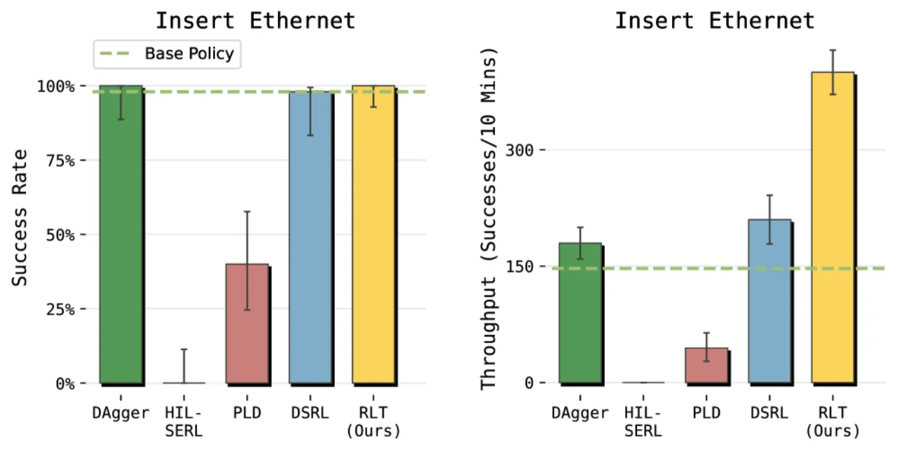
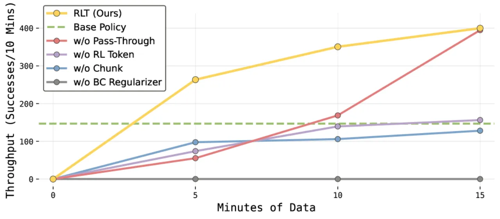

将预训练 VLA 的"任务相关知识"压缩成一个紧凑的 RL token，再用这个 token 训练轻量 actor-critic—— 无需整体重训 VLA，仅需少量真机交互（15 分钟至 5 小时），即可大幅提升精密操作任务的成功率与速度。
VLA 模型（如 π₀、OpenVLA 等）在多样化操作任务上展现出强大的泛化能力， 但面对需要毫米级精度的关键阶段（如螺钉安装、以太网插头插拔），其成功率往往不尽如人意。 强化学习（RL）理论上可以弥补这一差距，但真机 RL 面临严峻挑战：
"every episode takes time, every failure consumes effort and wear, and meaningful adaptation often has to happen within a few hours of practice."
现有方案的两难困境：
核心问题：如何在保留 VLA 预训练知识的同时，让轻量级 RL 在极少量真机数据上高效工作？

RLT（RL Token）分两个阶段工作：首先将 VLA 最终层的 token 嵌入压缩成一个紧凑的"RL token" （通过 encoder-decoder transformer 的信息瓶颈），然后在这个 RL token 上训练一个轻量 actor-critic， 在 VLA 冻结的情况下用在线 RL 精细化动作。

在特定任务的遥操作演示数据上，用重建损失训练 encoder-decoder（可选同时 SFT 微调 VLA 本身）。 重建目标确保："the representation for the RL token must retain enough information to enable the decoder to reconstruct the inputs。" 此阶段使用任务演示数据（每任务 1–10 小时的遥操作数据）。
冻结 VLA 与 RL token encoder，在 RL token 加本体感知状态（proprioceptive state）上训练轻量 actor 和 critic：
−Qψ(x,a) + β‖a − ã‖²，
其中 ã 为 VLA 参考动作块，β 控制锚定强度，防止在线 RL 走向奇怪的局部最优。
数据来源为 off-policy 混合：VLA rollout、RL 探索轨迹、以及人工干预纠正数据。 这种分工使得"VLA 提供广泛的感知理解与动作建议，轻量 actor-critic 在任务最难的部分做在线适配"。
在 4 个真实机器人精密操作任务上评测，使用关键阶段吞吐量 （throughput：每 10 分钟完成的成功次数）和成功率作为核心指标。 每任务关键阶段评测 50 episodes，RL 训练数据量约 15 分钟至 5 小时。

| 任务 | Base VLA | RLT（本文） | 变化 |
|---|---|---|---|
| Screw Installation（螺钉安装） | 20% | 65% | +45% |
| Ethernet Insertion（以太网插入） | 高（维持） | 维持 + 速度 ≈3× | 速度大幅提升 |
| Charger Insertion（充电器插入） | 高（维持） | 维持 + 速度 ≈3× | 速度大幅提升 |
注：论文中成功率以图表形式呈现；Screw 任务明确报告 20%→65%； 其余任务以 Ethernet 任务为代表详细比较基线。
| 任务 | Base VLA | RLT | 提升 |
|---|---|---|---|
| Screw Installation | 基线 | +40% | 成功率大幅提升 |
| Zip Tie Fastening | 基线 | +60% | 成功率大幅提升 |

| 方法 | 关键设计 | 表现 |
|---|---|---|
| HIL-SERL | ResNet encoder，单步动作 | 效果差，无法有效学习 |
| PLD（Probe-Learn-Distill） | 冻结 VLA 上的残差单步动作 | 效果差，单步动作不适合 |
| DSRL | 扩散 VLA 潜在噪声空间 RL | 成功率接近 RLT，但速度提升明显更少 |
| DAgger | 干预数据微调 VLA | 受限于人类演示速度 |
| RLT（本文） | RL token + chunked actor-critic | 成功率与速度均最优 |

| 消融变体 | 影响 |
|---|---|
| w/o RL Token（改用 ResNet-10 encoder） | 吞吐量降低约 50% |
| w/o Chunks（单步动作 C=1） | 无法可靠超越 VLA 基线 |
| w/o BC Regularizer（β=0） | 单项去除中影响最大 |
| w/o Pass-Through（不输入参考动作） | 学习更慢，训练过程失败更多，最终可部分恢复 |
RLT 在 Ethernet 任务上学到了演示数据中不存在的策略： 基础 VLA 表现出"探测行为"（反复接近-退出-重调整）， 而 RLT 学会了流畅插入并主动施加压力、利用顺从性—— 约 50% 的 RLT 关键阶段 episodes 速度快于最快的人类遥操作示范。
论文明确指出："RLT...does require additional human intervention during training to provide reward signals, intervention corrections, and switching between RL (for the critical phase) and the base policy (for the other phases)。" 奖励信号、干预纠正、阶段切换均需人工参与，无法做到完全自主。
需要人工识别"关键阶段"的起止点，并为该阶段提供 episode 级别的二值成功/失败标签。 论文将"开发全自主 RL 改进流程"列为未来工作方向。
适配阶段需要每任务 1–10 小时的遥操作演示数据来训练 RL token 的 encoder-decoder， 限制了其在无演示数据场景下的适用性。
当前实验仅对任务中的"关键阶段"做 RL 优化，而非端到端全任务 RL。 在关键阶段之外（抓取、运输等），仍沿用基础 VLA 策略。 这简化了问题但也限制了适用范围（inferred）。